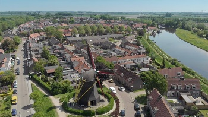

My profile
Personal information
- My name is Joan Maljers
- I am 17 years old
- My close family is my father, mother and sister.
- #

- I live in Arnemuiden
- I live in a farm that's been around for 120+ years.
- We keep animals there: chickens, sheep and a horse
- I bike around 20 minutes to school.
- I did my preliminary education at the"Isaac
- Beeckman Academie" in Kapelle.
- The education I had there was VWO (N&T en N&G).
- #
Extra-curricular activities
- I spend quite a bit of my time online, doing things
- like gaming and reading.
- Games that I like to play include Hearts of Iron IV,
- This War of Mine, Beholder.
- I also like to read quite a bit (online and offline),
- mostly sci-fy or fantasy books
- For example, those book (series) I'm reading are "Ranger's
- Apprentice" (offline) and "I'm a spider, so what" (online)
- I also enjoy watching movies and series, I recently
- started watching Alien Worlds.
- My favorite movie is Edge of Tomorrow (EoT), released
- in 2014.
- I've watched EoT about 3 times by now.
- I liked it so much I even read the book it was based on
- (which I also enjoyed,
- though it differed quite a lot from the movie.
- I have a job at an Aldi in Middelburg.
- I mostly just put things in the shelves, but other things I do are:
- cleaning (the shelves), removing the old bread (in
- the evenings) and working as a cashier.
- #
- #
- #
- #